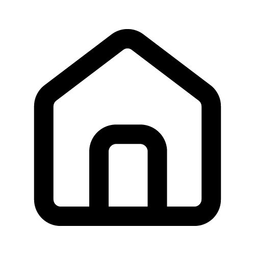

Beranda
Tugas
Tentang
Kontak saya
Daftar tugas dari CUY UNIVERSITY
Semeseter I
Sesi 1 (Web sederhana dan tebak generasi)
Sesi 2 (Membuat halaman web sederhana)
Sesi 3 (Undifined)
Sesi 4 (Membuat cetekan lampu)
Sesi 5 (Membuat fake login)
Sesi 6 (Membuat dark mode)
Semeseter II
Sesi 1 (Membuat card social media)